Puzzles you can follow with the biology you know, but which make you think much harder about it. Some have been solved in surprising ways; some nobody has answered yet. Think about each one, or discuss it, before you open "What biologists think so far".
Still unsolved
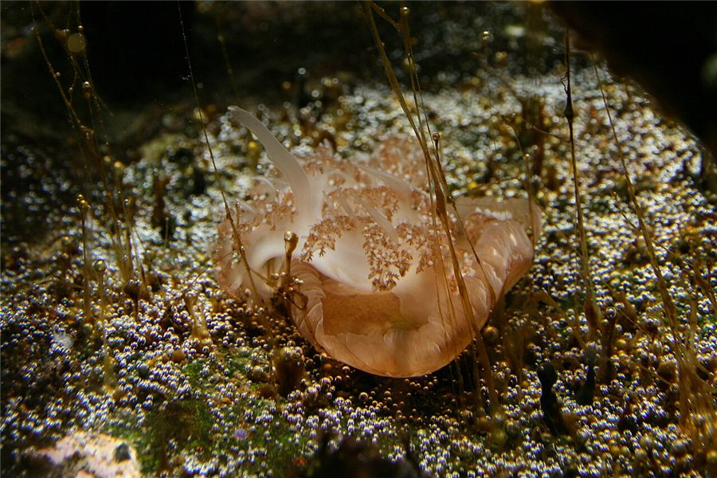
Still unsolvedWhy do we sleep?
.jpg){kind=link}
You spend about a third of your life asleep, unable to eat, find a mate or watch for predators. For a wild animal that looks like a terrible risk. Yet every animal with a nervous system that has been studied carefully sleeps, or has a sleep-like state, from fruit flies to jellyfish that have no brain at all.
Missing sleep is harmful. Memory and attention fail within a day or two, and in experiments in the 1980s, rats that were kept awake continuously died within a few weeks. So sleep must do something essential. But what?
Think about it
- If sleep is so risky, why has natural selection not got rid of it?
- Dolphins and some birds can sleep with one half of the brain at a time. What does that suggest about what sleep is for?
- What experiment could tell apart "sleep repairs the brain" from "sleep saves energy"?
What biologists think so far
There is no agreed answer. The leading ideas are that sleep strengthens memories, as the brain replays the day's activity; that it lets connections strengthened during the day be scaled back; that it saves energy; and that it helps clear waste from the brain. There is evidence for parts of each, and sleep may well do several jobs.
When we sleep is much better understood than why. The hypothalamus acts as a master clock, and melatonin from the pineal gland signals that it is night. Pressure to sleep also builds up the longer you stay awake, partly through a substance called adenosine, which is the substance caffeine blocks.
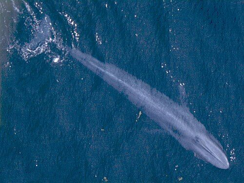
Still unsolvedWhy don't whales get more cancer? Peto's paradox

Cancer starts when a cell builds up mutations that make it divide out of control. Every cell division is a chance for a mistake, so you might expect an animal with more cells, living for longer, to get more cancer. A blue whale has over a thousand times as many cells as a human.
Yet large, long-lived animals do not get more cancer. Elephants rarely die of it, and bowhead whales can live for over 200 years. Mice, with far fewer cells, often die of cancer within three years. This is Peto's paradox, named after the epidemiologist Richard Peto, who pointed it out in 1977.
Think about it
- Why might natural selection favour better protection against cancer in big animals than in small ones?
- A wild mouse usually dies of something else, such as a predator or the cold, before it is old. How does that change the pressure to evolve defences against cancer?
- What could you measure in elephant cells to test an idea about why they resist cancer?
What biologists think so far
Large animals seem to have evolved extra protection, and different species have found different solutions. Elephants have about 20 copies of TP53, a gene that stops damaged cells dividing or makes them destroy themselves; humans have one. Bowhead whales appear to repair broken DNA unusually well. Naked mole rats, which are small but live for over 30 years, have defences of their own.
A large study of zoo mammals, published in 2021, confirmed that deaths from cancer do not rise with body size or lifespan, although meat-eating mammals had higher rates. There is no single explanation yet, and researchers hope these animals' defences may suggest new treatments for people.
Still unsolvedWhy does sex exist?

Picture two populations of the same size. In one, every individual is a female that reproduces without mating, producing only daughters, and every daughter can reproduce in turn. In the other, half the individuals are males, which cannot produce offspring themselves. All else being equal, the all-female population grows twice as fast. Biologists call this the twofold cost of sex.
There are other costs too: finding a mate takes time and energy, and mating can spread disease. Yet most animals and plants reproduce sexually, at least some of the time.
Think about it
- What does sexual reproduction give offspring that asexual reproduction does not?
- Why might variation matter more in a world full of parasites that are evolving all the time?
- Some species, such as aphids, switch between asexual and sexual reproduction. When might each one pay off?
What biologists think so far
Most explanations are about variation. The Red Queen hypothesis says that parasites evolve quickly to attack the most common genotypes, so offspring with new combinations of genes have an advantage. Freshwater snails in New Zealand support this: sexual reproduction is more common where parasites are common. Other ideas are that sex brings together useful mutations from different individuals faster, and helps to remove harmful ones that would otherwise build up.
Some species are entirely asexual, such as some whiptail lizards in which there are only females, but most asexual lines seem to die out quite quickly. Tiny animals called bdelloid rotifers are a puzzle: they appear to have reproduced without sex for tens of millions of years. Which explanation matters most is still debated.
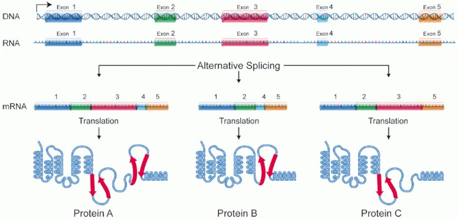
Still unsolvedHow much of our DNA does anything?

Only about 1 to 2% of the human genome codes for proteins. Some of the rest controls when genes are switched on, or codes for RNA that is never translated. But much of it consists of repeated sequences, many of them copies of old viruses and other mobile DNA.
An onion has about five times as much DNA as a human, and some amoebae and lungfish have far more. If all that DNA were essential, why would an onion need so much more than us?
Think about it
- How could you test whether a stretch of DNA has a function?
- If a sequence is the same in humans and mice, what does that suggest? What if it differs a lot?
- Why might a genome carry DNA that does nothing useful?
What biologists think so far
In 2012 a large project (ENCODE) reported that about 80% of the human genome shows some biochemical activity, and some reports said "junk DNA" was dead. Many biologists disagreed: being copied into RNA now and then is not the same as having a function.
Comparisons between species suggest that perhaps 8 to 15% of our genome is under natural selection, so it probably has a function. The rest may be largely free to mutate. How much of our DNA really matters is still being argued over.
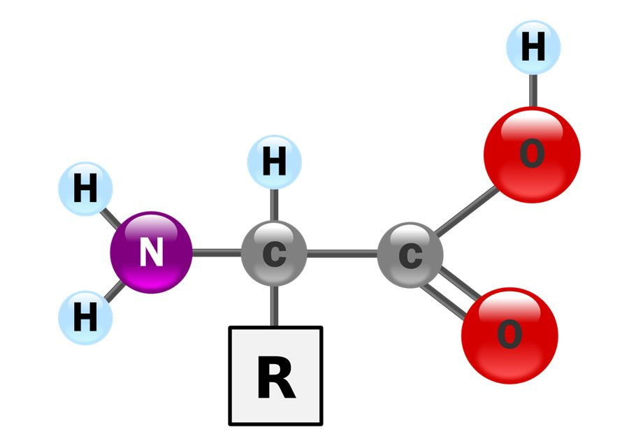
Still unsolvedWhy are life's molecules left-handed?

Most amino acids exist in two forms that are mirror images of each other, like left and right hands. Made in a laboratory, they form an equal mixture of both. Yet the proteins of every living thing are built almost entirely from the "left-handed" (L) forms, and DNA and RNA use only one form of their sugars.
Think about it
- Why might it be an advantage for all of a cell's amino acids to have the same handedness?
- Could life elsewhere use the opposite forms? What would that tell us?
- What could have tipped the balance towards one form on the early Earth?
What biologists think so far
Using one form is clearly useful: a protein built from a mixture would not fold into a consistent shape. But why life uses the L form, and not the other, is still unknown.
Ideas include small differences in light or minerals on the early Earth, slight excesses of one form in meteorites, and chance followed by amplification. Some meteorites do contain slightly more of the L forms of some amino acids, but no explanation is accepted by everyone.
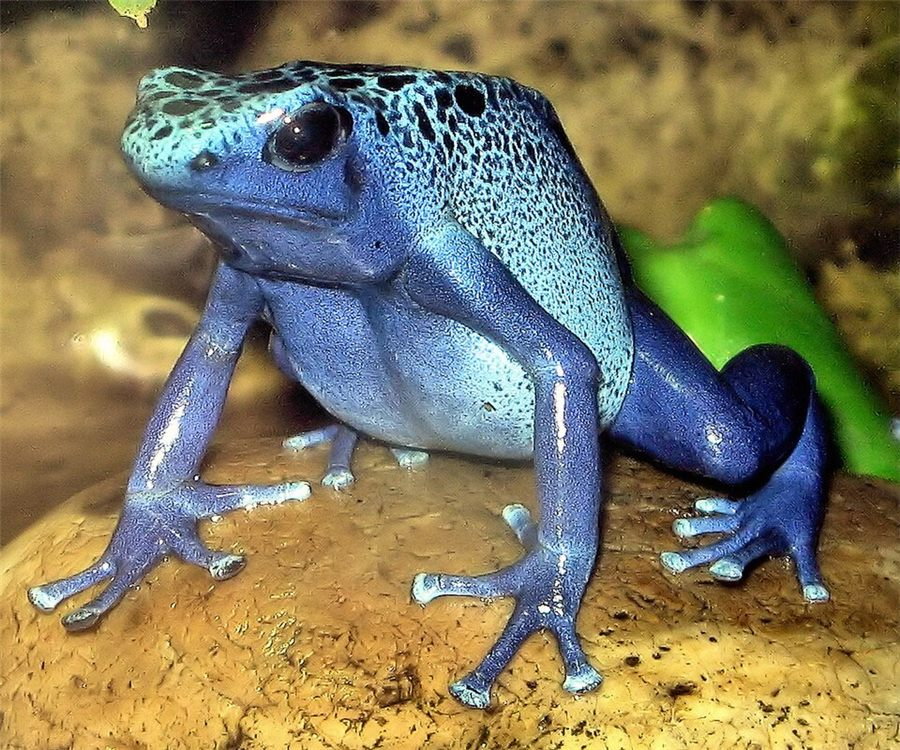
Still unsolvedHow many species are there?

Scientists have described and named about two million species. But new ones are found every day, and some groups, such as insects, fungi and microbes, are barely explored.
Think about it
- How could you estimate the number of species without counting them all?
- Why are some groups, such as birds, almost completely known, while others are not?
- What counts as a species for bacteria, which do not reproduce sexually?
What biologists think so far
Estimates vary hugely. One 2011 study, using patterns in how known species are classified, estimated about 8.7 million species of eukaryotes, most still undescribed. Estimates for bacteria and archaea range much higher, and some studies have suggested a trillion, though the figure is disputed.
The answer depends partly on how species are defined, especially for microbes. Many species may go extinct before they are ever described, which is one reason surveys of biodiversity matter.
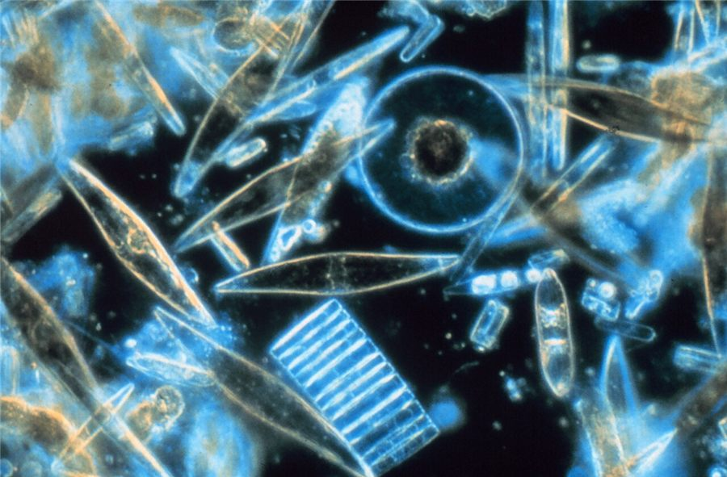
Still unsolvedThe paradox of the plankton

Competitive exclusion says that two species competing for exactly the same resources cannot coexist for long: the better competitor should win. In open water, phytoplankton all compete for the same few things: light, carbon dioxide and a handful of mineral nutrients.
So a lake or a patch of sea should end up with only a few species of phytoplankton. Instead, a single sample of water can contain dozens or hundreds of species living together. The ecologist G. Evelyn Hutchinson called this the paradox of the plankton in 1961.
Think about it
- What could stop the best competitor from winning?
- How might the water change from week to week, or from place to place?
- Could predators or viruses help rare species survive?
What biologists think so far
Several explanations probably act together. Conditions change often, with seasons, storms and mixing, so the best competitor keeps changing before any species wins. Predators and viruses tend to attack whichever species is most common, which helps rarer ones. Small differences in needs, and patchy water, also allow coexistence.
Which factors matter most in real waters is still being studied, and the paradox has become a classic test of how ecological theory works in nature.
Solved, but surprising
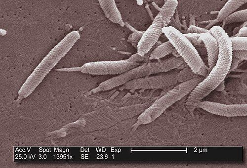
Solved, but surprisingWhy doesn't your stomach digest itself?

Your stomach makes hydrochloric acid strong enough to reach pH 1.5 to 2, and an enzyme, pepsin, that digests proteins. The stomach wall itself is made of cells full of protein. So why does the stomach not digest itself?
Think about it
- How could cells make a protein-digesting enzyme without digesting themselves?
- What kind of barrier could keep the acid away from the stomach wall?
- For decades, doctors blamed stomach ulcers on stress and too much acid. What evidence would change their minds?
What biologists think so far
The stomach has several defences. Pepsin is made and stored in an inactive form, pepsinogen, which becomes active only in acid, once it is inside the stomach. The lining secretes a thick layer of mucus containing hydrogencarbonate ions, which neutralise acid next to the cells. The lining cells are tightly joined to each other and are replaced every few days.
The surprise came with ulcers. In the early 1980s, Robin Warren and Barry Marshall found a spiral bacterium, Helicobacter pylori, in the stomachs of people with ulcers. Few believed that bacteria could live in such acid. Marshall drank a culture of the bacteria, developed inflammation of the stomach, and cured it with antibiotics. Most ulcers are now treated with antibiotics, and the two scientists won the Nobel Prize in 2005.
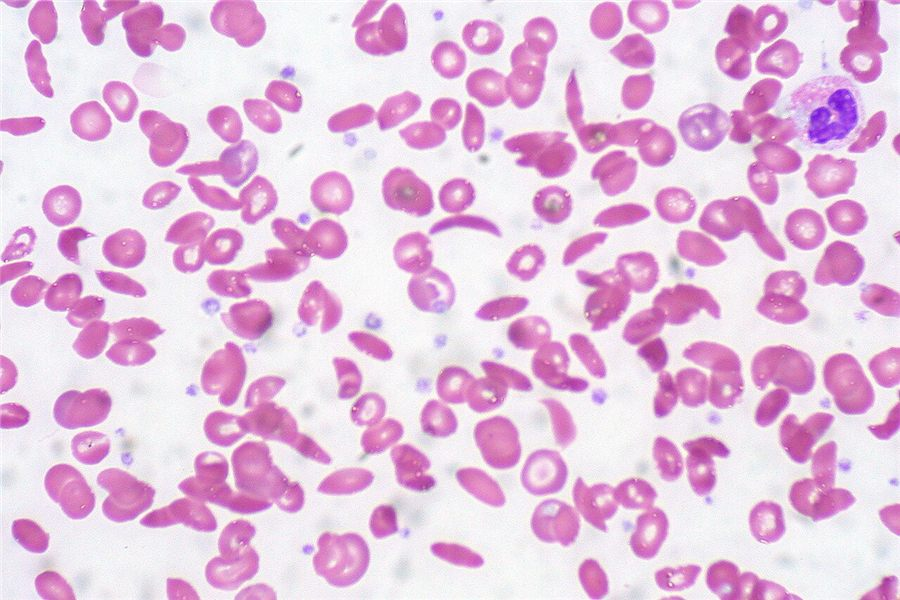
Solved, but surprisingWhy is the sickle cell allele so common?
.jpg){kind=link}
Sickle cell disease is caused by a single base change in the gene for one of the chains of haemoglobin. People with two copies of the allele have red blood cells that turn sickle-shaped when oxygen is low. These cells block small vessels and cause pain and organ damage, and without treatment, early death.
Natural selection should make an allele like this rare. Yet in some areas of Africa, India and the Middle East, a quarter or more of the people carry one copy.
Think about it
- Look at a map of where the sickle cell allele is common. What other disease has a similar map?
- Compare people with no copies, one copy and two copies of the allele. Which group does best where malaria is common? Where there is no malaria?
What biologists think so far
The maps match the map of malaria. People with one copy of the allele are largely protected against severe malaria, and they have few symptoms of sickle cell disease themselves. Where malaria is common, these carriers survive and have children more often than people with no copies, so the allele stays common, even though people with two copies are badly affected. This is called heterozygote advantage.
Where there is no malaria, carriers have no advantage, so selection acts only against the allele. The whole story comes from a single base substitution, which puts the amino acid valine in place of glutamic acid in the protein.
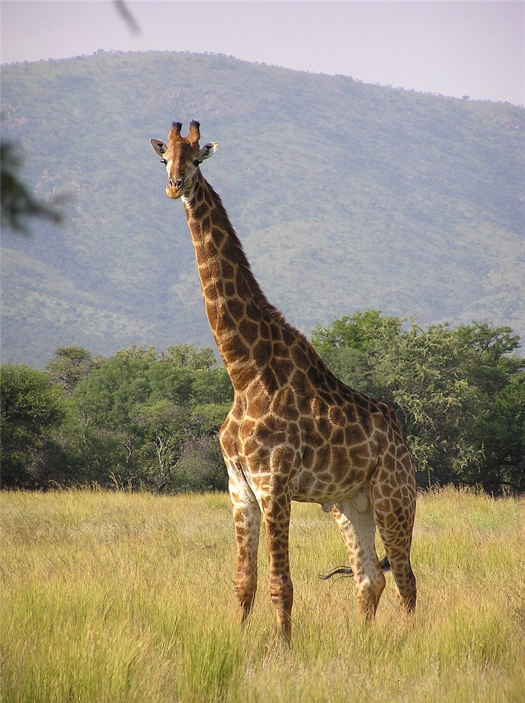
Solved, but surprisingThe giraffe's nerve that goes the long way round

The larynx (voice box) is at the top of the neck, close to the brain. You might expect the nerve that controls it to take the shortest route. In mammals, though, one branch, the recurrent laryngeal nerve, leaves the brain, runs down into the chest, loops under a large blood vessel near the heart, and then climbs back up the neck to the larynx.
In a human, the detour adds a few tens of centimetres. In a giraffe it adds several metres: the nerve runs almost the whole length of the neck twice.
Think about it
- Would an engineer design a nerve like this? What does that suggest about how bodies came to be the way they are?
- In fish, the matching nerve takes a short, direct route past the gills. What changed during the evolution of land vertebrates that could have pulled it down into the chest?
What biologists think so far
The detour makes sense as history, not as design. In fish, this nerve passes behind one of the blood vessels that serve the gills, which is a short, direct route. As vertebrates evolved necks, and the heart and its vessels moved down into the chest, the vessel moved and took the loop of the nerve with it. Evolution can only modify what already exists, so the nerve became longer instead of being rerouted.
This is a classic piece of evidence for evolution from a common ancestor. To be fair to the giraffe, the nerve does send small branches to the trachea and the oesophagus on its way, but the long loop itself is left over from the ancestral route.
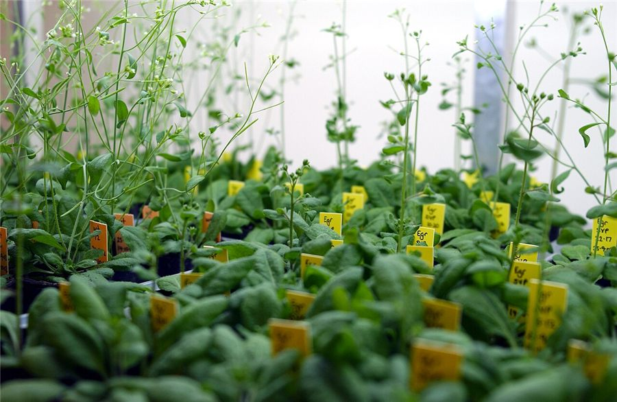
Solved, but surprisingHow does a plant know when to flower? The search for florigen

Many plants flower at a particular time of year, triggered by day length. Experiments in the 1930s showed something surprising: day length is detected by the leaves, but flowers form at the shoot tip, often far away.
If one leaf was given the right day length, the whole plant could flower. Grafting showed that the signal could even pass from one plant to another through a graft. In 1936 the Russian botanist Mikhail Chailakhyan named the unknown signal "florigen". Then, for about 70 years, nobody could find it.
Think about it
- What kind of signal could travel from a leaf to the tip of a shoot?
- How could grafting experiments show that the signal moves through the plant?
- Why might a signal be so hard to find if it is present in tiny amounts?
What biologists think so far
In the 2000s, work on the small plant Arabidopsis and on rice showed that florigen is a protein, made from a gene called FT in the leaves. The protein travels through the phloem to the shoot tip, where it switches on the genes that turn a growing point into a flower.
The long search shows how hard it can be to find a substance that works in tiny amounts, and how a model organism with well-mapped genes can crack a problem that physiology alone could not.
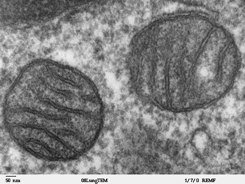
Solved, but surprisingWhere did your mitochondria come from?

Mitochondria have their own DNA, in a circular loop like a bacterium's. They have their own small ribosomes, like bacterial ones, and they divide by splitting in two. They are surrounded by two membranes.
Think about it
- What would explain an organelle that looks so much like a bacterium?
- What evidence would you look for to test that idea?
- Why might a host cell and a bacterium both benefit from living together?
What biologists think so far
The endosymbiotic theory, championed by Lynn Margulis in the 1960s against strong opposition, says that mitochondria descend from bacteria that were taken into an ancestral cell and lived on inside it. Chloroplasts came later in the same way, from cyanobacteria. DNA sequencing has confirmed both: mitochondrial genes are most similar to those of a particular group of bacteria.
Recent discoveries of archaea, such as the Asgard archaea, with some eukaryote-like genes suggest that the host cell was an archaeon. Exactly how the partnership began is still studied, but that every eukaryotic cell contains the descendants of bacteria is now well established.